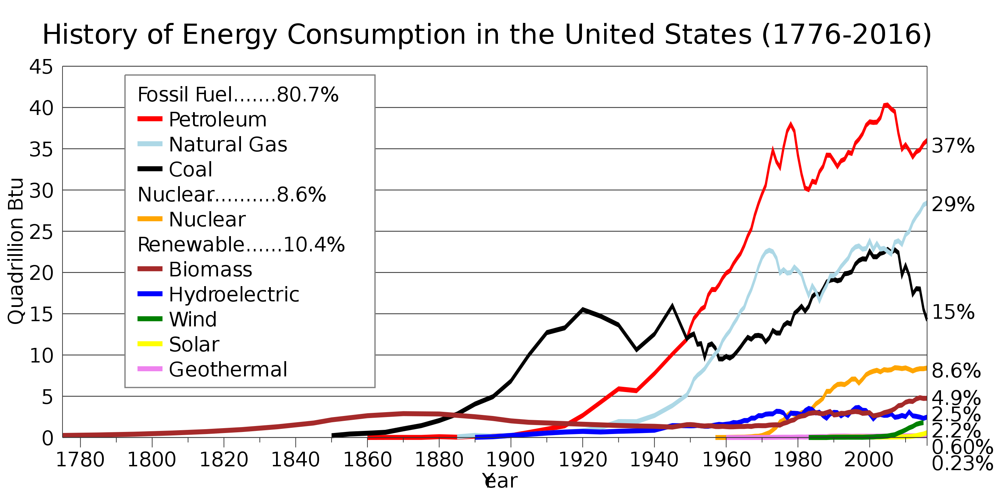
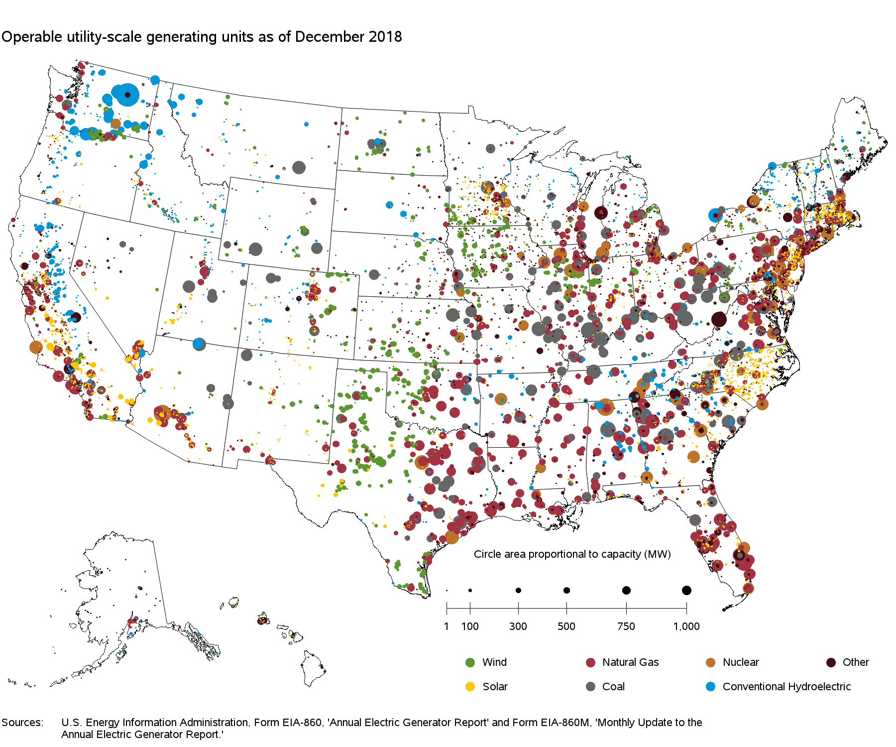

United States
The United States was the second-largest energy consumer in 2010 after China. The country is ranked seventh in energy consumption per-capita after Canada and several small nations. Not included is the significant amount of energy used overseas in the production of retail and industrial goods consumed in the United States.

Petroleum Energy
Oil is one of the largest sources of energy in the United States. The United States influences world oil reserves for both growth and development. As the 20th century progressed, petroleum gained increasing importance by providing heating and power to the commercial and industrial sectors. Oil was also used in transportation; first for railroads and later for motor vehicles.
Nuclear Energy
Nuclear power in the United States is provided by 99 commercial reactors with a net capacity of 100,350 megawatts (MW), 65 pressurized water reactors and 34 boiling water reactors. In 2016 they produced a total of 805.3 terawatt-hours of electricity, which accounted for 19.7% of the nation's total electric energy generation.
Hydroelectricity
Hydroelectric power stations in the United States are currently the largest renewable source of energy, but the second for nominal capacity (behind Wind power in the United States). Hydroelectric power produced 35% of the total renewable electricity in the U.S. in 2015, and 6.1% of the total U.S. electricity
Natural Gas
Natural gas was the largest source of energy production in the United States in 2016, representing 33 percent of all energy produced in the country. Natural gas has been the largest source of electrical generation in the United States since July 2015.
Coal Energy
Generation of electricity is the largest user of coal, although its use is in decline. About 50% of electric power was produced by coal in 2005, declining to 30% in 2016.[29]:1 Electric utilities buy more than 90% of the coal consumed in the United States.
